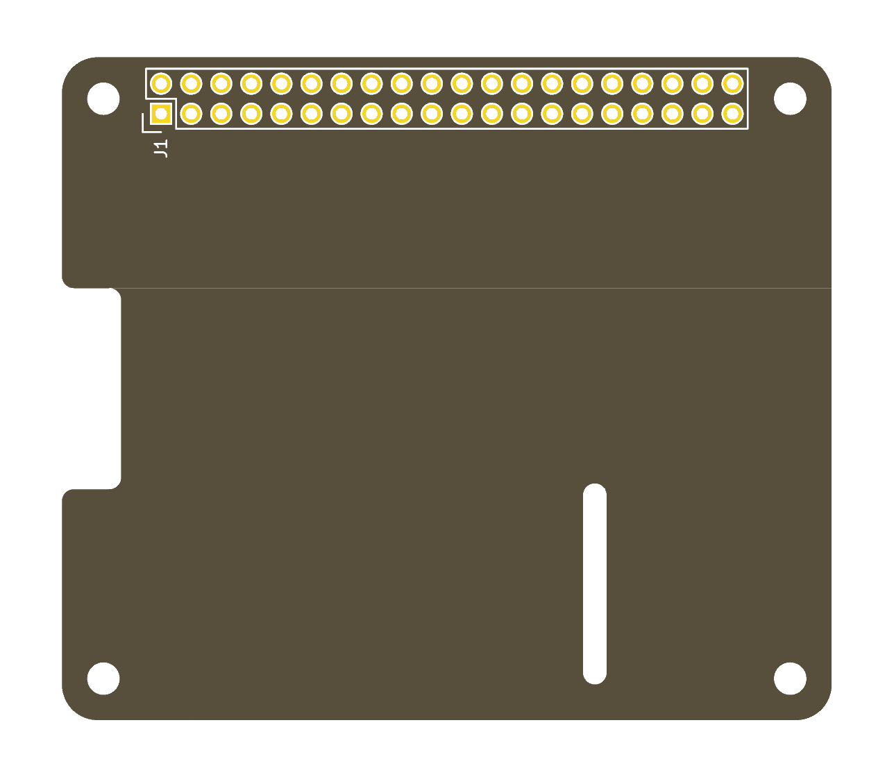

A 65 mm x 56 mm board to the Raspberry Pi HAT mechanical specification: the board outline with the display flex notch, the optional camera flex slot, four mounting holes and a 2x20 through-hole GPIO header (J1).
The schematic holds the 40-pin GPIO connector with every pin named and unconnected. Wire up what the design uses and put a no-connect flag on the rest.
The symbol and the footprints are in the project's own
RPi_Hat libraries, so nothing else has to be installed.

Derived from RPi_Hat_Template by Dave Vandenbout. MIT licence.